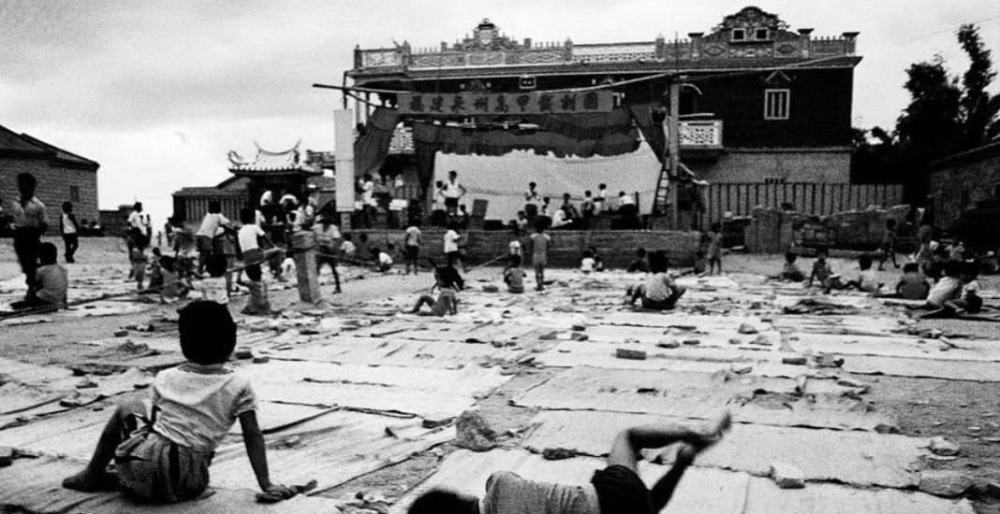
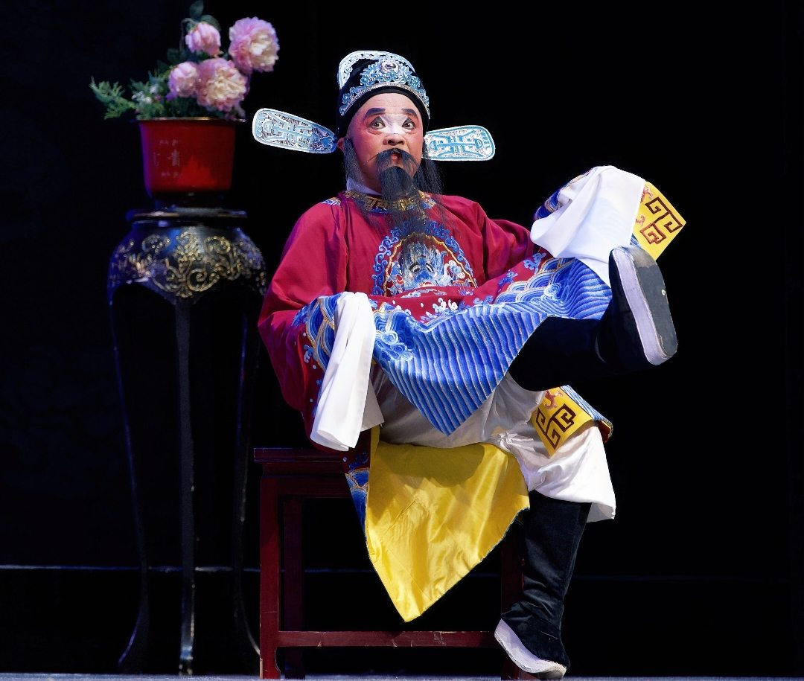
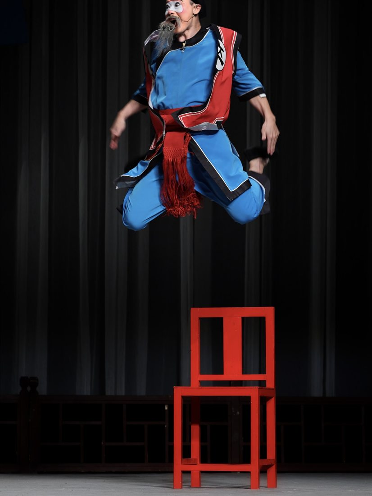
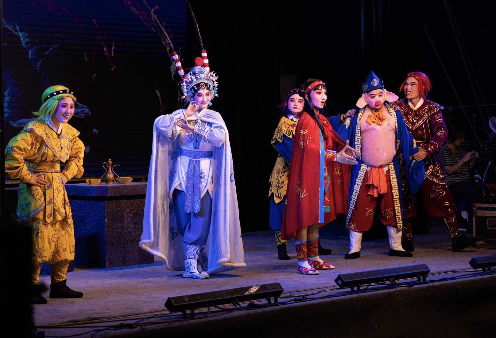
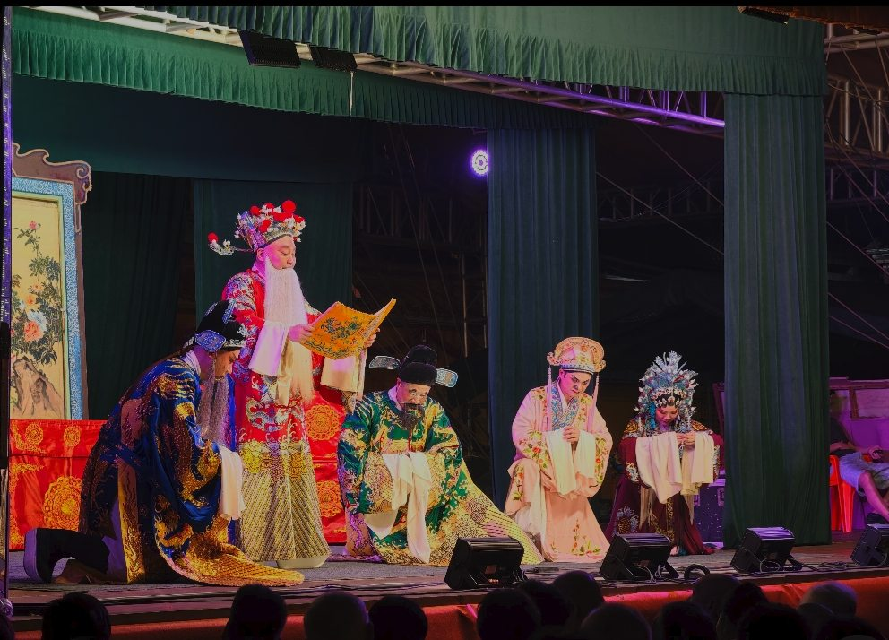

晚风是隐而不彰的线索
从暮风撩幕、乡人赴戏，到空席叩问与岁岁不息，晚风勾连旧日繁华、老伶人的孤守和新生代的接续。
暮风垂幕，一院空光阴。
一段关于空台、坚守与少年伶人的闽南叙事。
暮风垂幕，
一院空光阴。高甲戏 · 闽南叙事
闽南的暮色，裹着潮润的温柔缓缓沉落。晚风钻过古戏台风化的木梁，撩起垂悬已久的布幕，掀开一角静置多年的光阴。
台上仿佛仍有水袖回旋、腔韵流转；台下长凳蒙尘，四下寥落。一盛一空，一喧一寂，便是高甲戏落在乡土里当下的模样。
这一方戏台，
曾是整片村落的烟火圆心。旧时锣鼓一响，乡音便顺着巷陌漫开
风不曾停下流转，人间烟火却早已改换模样。如今雕梁犹在，戏服、曲牌、身段依旧恪守古法，只是昔日满堂盛景难寻。
光影斑驳落于空凳之上，晚风掠过空旷席位，卷走旧年喧嚣，只留一缕唱腔余韵，在古村静静回荡。
往昔锣鼓一响，乡音顺着巷陌漫开。星子垂落的夏夜，远近乡人踏着晚风赴约。台上眉眼流转，唱尽离合悲欢；台下灯火融融，人声喧腾，孩童追逐，老者静听。
铿锵软糯的曲调，是乡土的欢愉，也是游子安放乡愁的归处。年年曲声不断，戏台驮着一整代闽南人的故土记忆，把乡音刻进血脉。

灯火融融，人声喧腾。
戏台驮着一整代人的乡愁。那时锣鼓一响，整片村落都亮了起来

如今雕梁犹在，昔日满堂盛景难寻。晚风掠过空旷席位，卷走旧年喧嚣，只留一缕唱腔余韵，在古村静静回荡。
台上身段鲜活，台下只剩空寂。途经此地的人望见此景，多半暗自怅然：这门古老戏艺，怕是要在时代浪潮里慢慢消散。
快节奏的当下，碎片化娱乐抢占目光，绵长沉敛的古调很难留住匆匆行人。戏台长久守着空荡木凳，像一处被遗忘的旧隅。
暮色渐凉，帘纹随风轻颤。戏场之中，没有喝彩，没有看客，唯有余晖铺满地。

老伶人立在台中央，慢慢理平微微泛旧的戏衣，抬袖、凝眸、转身，一招一式，和多年前满座喧闹时分毫无二致。
晚风穿过多重空席，似在无声叩问：无人观赏，又何必登台？
余音消散，空台之上漫出低语
“戏，不是唱给人看的，是唱给岁月听的。”空台之上的低语 · 高甲戏
从前满堂人声，是烟火捧场；如今四野寂然，是本心自持。世人见戏台空旷，便认定戏韵将凉，可戏魂本就不在人头攒动，而在执戏之人不肯放下的坚守。
空台不是落幕的遗憾，恰恰留给传承一片留白。
台下空寂，
台上从未退场。一腔一调，仍按旧时的规矩起落
冷清从来锁不住一脉旧腔。年轻的扮演者循着台上学来的范式，一遍遍摹练唱段，留住翩跹水袖里流转的韵致。
不必等候满堂坐席，自有同频的少年人循着乡音奔赴而来，静静伫立台下，接住这一曲闽南古调。他们终于读懂，这便是祖辈口中的高甲戏，婉转腔调深处，埋着故土的根。


同频的少年循着乡音而来，在台下接住一曲闽南古调。
旧腔随年轻演员流转四方，落在更多乡野与厅堂。
传统不再只靠怀旧存活，而由新一代共情、理解与选择。
旧戏不负山海，
乡愁自有归处。传统终觅新生
一座戏台，收纳山海乡愁；
一代少年伶人，承续不绝文脉。
关于这条叙事为什么这样展开，以及那些藏在文字背后的技法。
从暮风撩幕、乡人赴戏，到空席叩问与岁岁不息，晚风勾连旧日繁华、老伶人的孤守和新生代的接续。
眼前的风化戏台是实写，昔日满堂与少年携古调远走是虚写。一冷一热、一昔一今，拉开时空张力。
先让读者走入“古戏将亡”的伤感，再由老伶人独唱与年轻演员接续推翻预判，将主题转向坚守与代际传承。
核心事件落地后，以戏台、唱腔、乡愁与少年伶人缓缓收束，让冲突沉淀为绵长余韵。